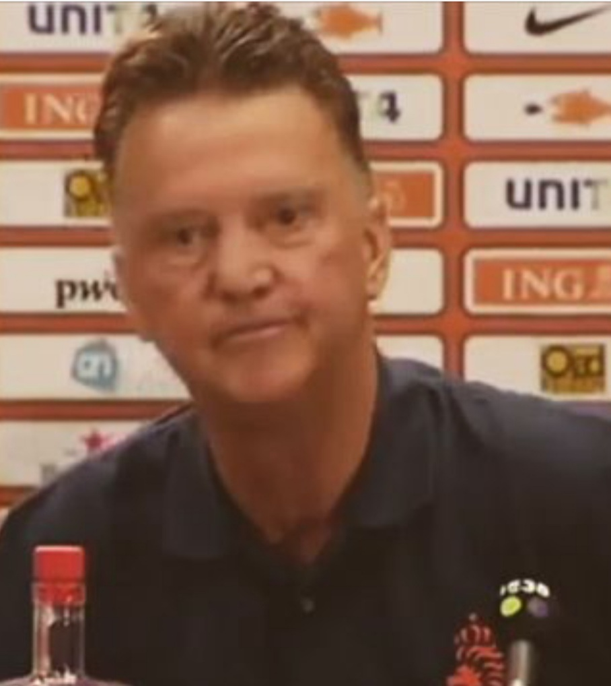

Louis van Gaal Fan Site
Home
Informatie
Carrière
Mijn Mening
Video's

Welkom bij
Louis van Gaal Fan Site
Louis van Gaal is de huidige bondscoach van Nederlands Elftal en oud-profvoetballer.
Ik heb deze website gemaakt, omdat Louis van Gaal mijn grote idool is.